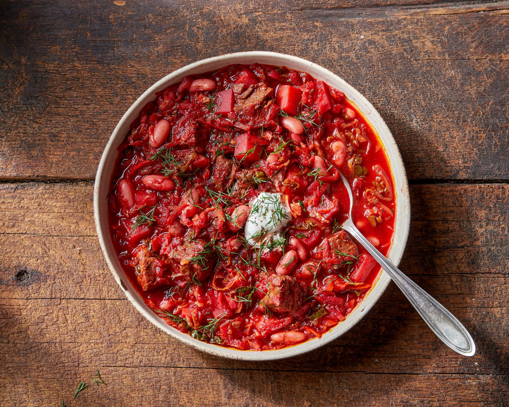

Home
Borsch Recipe

Description
Hot soup based on beets, which gives it its characteristic red color.
It has about a dozen varieties, which is due to the separation of Ukrainian lands in the past and the influence of
the
culinary customs and tastes of neighboring peoples on the formation of Ukrainian cuisine. It has become widespread
in
many national cuisines: Russians, Ukrainians, Belarusians, Poles, Lithuanians, Romanians, Moldovans, and Ashkenazi
Jews
have this dish.
Ingredients
- 1½–2 liters of water
- 400–500 g pork or beef on the bone
- 2 small beets
- 1 medium carrot
- 3 medium onions
- 4–5 tablespoons of vegetable oil
- a pinch of citric acid, a little table vinegar or ½ lemon
- 2 tablespoons of tomato paste
- 300 g fresh white cabbage
Cooking proccess
- Pour cold water into the pan, add the meat and place over medium heat. The broth will be tastier if you use meat
on the
bone.
- When the liquid boils, cover the pan with a lid and simmer over low heat for an hour and a half.
- Wash and peel the beets, carrots and onions. Grate the beets on a coarse grater, and grate the carrots on a
medium
grater. Cut the onion into small cubes.
Pour oil into the pan, turn on medium heat. Fry the onions and carrots, stirring, for about 5 minutes.
- Then add the beets. Add citric acid, vinegar or lemon juice to it. Thanks to this, the borscht will be truly red
and
acquire a pleasant sourness.
- Cook for another 5 minutes. After this, add tomato paste, stir and leave on the fire for another 5-7 minutes.
- When the broth is cooked, remove the meat from it. While it cools, add shredded cabbage to the pan. After 5-10
minutes,
add the potatoes cut into strips or cubes.
The order in which the vegetables are added can be changed. If the cabbage is young, it is better to add it after
the
potatoes. Well, or at the same time, if your potato variety boils quickly.
- While the potatoes are cooking, remove the meat from the bone and cut into cubes. Return it to the soup. Add
salt to
taste.
- Add the roast and stir. Throw in the bay leaf and finely chopped herbs. Cover the pan with a lid and cook for
another
5-7 minutes.